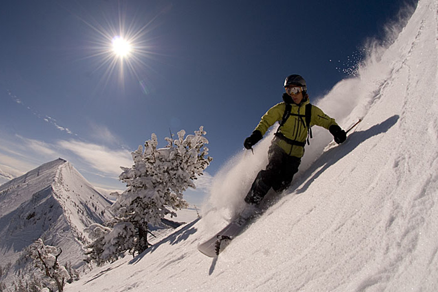

Work Experience
-
Craft Design and Development
Seattle, Washington
Product Design and Development
2013 – Present
-
High Above, Inc.
Seattle, Washington
Handmade Carry Products Sold in Tokyo
2011 – Present
-
Carryology
Core Contributer (journalist)
2011 – Present
-
National Outdoor Leadership School
Lander, Wyoming
Field Instructor
2009 – 2012
-
Rainy Pass Repair
Seattle, Washington
Outdoors Product Repair & Alterations
2011
-
Mystery Ranch
Bozeman Montana
Sewn product manufacturing
2010
Education
-
B.S. Recreation Management, Emphasis in Leadership
Northern Arizona University
Clients
- BDA, Inc.
- Frog Design
- Flylow Gear
- Hager Mountain Equipment
- Iva Jean
- Microsoft
- Oiselle
- Rivendell Bicycle Works
- Rivendell Mountain Works
- Smart Design
Notable Achievements
- New York Fashion Week - Oiselle Runway Show
Ultralight Cuben Rucksack
- 2nd Magazine Japan Feature
High Above x Backstreet Tokyo “Zip Pouch”
- Pecha Kucha (PK41) Presenter on Creative Process
“Thinging: Explorations in Thinking+Making